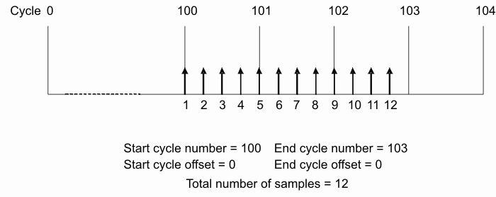

Creating a high resolution timing diagram
The High Resolution Timing Diagram allows you to select a range of cycles and examine them in detail. In order to create and use the high resolution timing diagram you must use the HRIT command to provide the following information:
- Start cycle number
- Start cycle offset
- End cycle number
- End cycle offset
- Total number of samples
Usually, the start cycle number will be smaller than the end cycle number, and both offsets will be set to 0. But you can zoom into a single cycle by specifying the same number for both the start and end cycle, and defining the respective offsets as required.
The high resolution timing diagram is executed by the HREX? query. All pins specified must be O or IO types. The figure below shows an example of how a high resolution timing diagram is created.

The high resolution diagram always uses edge compare. The edge is moved to the position defined by the parameters. A functional test with the edge at this position is performed and the sampled value stored. The edge delay is increased by the resolution defined by the samples per cycle parameter and a sample is taken at each step.
If the period changes during a high resolution test, the number of samples per cycle remains unchanged.
The high resolution timing diagram always references its samples per cycle parameter to Standard mode pins.
Executing a high resolution timing measurement deletes the contents of the Error Maps of the specified pins. If the timing measurement is activated through the user interface, a functional test is performed when the measurement is complete. This restores the contents of the Error Map. This does not happen if the firmware commands are used.
The high resolution timing data is retrieved using the HREX? query. The data is returned in a packed binary format.
Functional changes
- Introduced before SmarTest 6.3.2